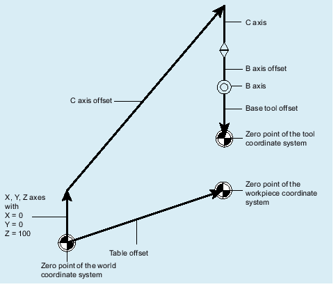

The kinematic structure of a tool carrier is described by one (type T and type P) or two (type M) kinematic chains (subchains), which start from the associated reference point, machine zero or tool carrier reference point). One of the two chains, the tool chain, ends at the reference point of the tool, the other chain, the workpiece chain ends in the zero point of the basic coordinate system.
The CORRTC function writes axis directions for machines with tool carriers in special correction elements. A kinematic chain is described, for example, with elements of the type OFFSET, which are defined via $ NK_TYPE.
The two subchains can each be divided into a maximum of four sections:
Section 1 begins at the starting point of the chain and ends at the first rotary axis.
Section 2 is the section between rotary axis 1 and rotary axis 2.
Section 3 is the section between rotary axis 2 and the end of the chain.
The following figure shows an orientable tool carrier with 2 rotary axes.
CORRTC example
The sections are clearly defined: If the kinematic subchain is executed from its starting point to its end point, then the first section has the index 1, next has index 2, and so on.
A reference can be made to a constant kinematic chain element (chain element of the type $NK_TYPE[<n>] = "OFFSET") in each of these sections with the $TC_CARR_CORR_ELEM [, 0 ... 3] system variables. The correction values determined during the machine measurement are written to the so designated elements with the CORRTC function.
The sequence of references in $TC_CARR_CORR_ELEM[m, 0 ... 3] must correspond to the sections described above, that is there can only be one chain element in $TC_CARR_CORR_ELEM[m, 0] which belongs to the offset vector l1, etc.
The reference value is always the corresponding value effective in the tool carrier active when CORRTC is called. After selection of the tool carrier, changed contents of the stored kinematic data have no effect on the method of operation of the CORRTC function.